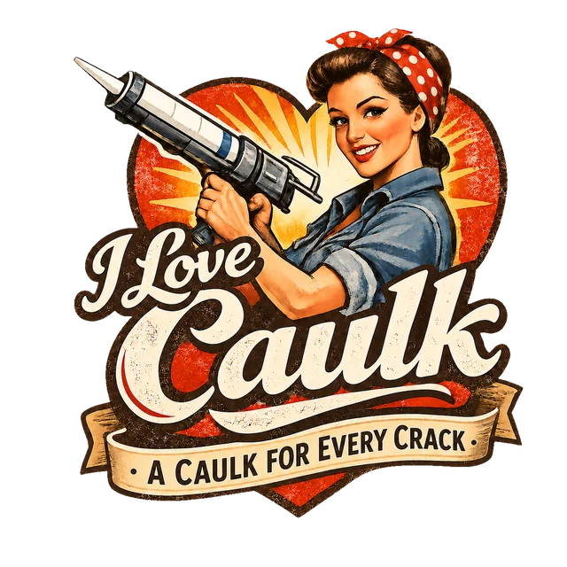

Rosie
Head caulker
Kitchens, exteriors, and the Caulk Finder. Cheerful, exacting, and the owner of more caulk guns than shoes. Rosie believes a straight bead is a form of self-respect.
Since 2015
We started I Love Caulk because caulk is the most underrated product in the house. It keeps water out of your walls, drafts out of your bedroom, and bugs out of your pantry, and almost nobody explains how to choose it or use it. So we do. Seriously.

Our house characters. They show up in the room guides, sign the tips, and argue about silicone at lunch.
Head caulker
Kitchens, exteriors, and the Caulk Finder. Cheerful, exacting, and the owner of more caulk guns than shoes. Rosie believes a straight bead is a form of self-respect.

Wet-zone specialist
Bathrooms and basements. Calm, meticulous, and slightly obsessive about prep. Flavio has never once caulked a damp joint and would like you to join him.

Interiors & finish work
Trim, paint-ready finishes, and quiet walls. Karen can spot a shadow line from across the room and fixes it before anyone else notices.

Heights & heavy duty
Roofs, gutters, and garage concrete. A man of few words, most of them about ladder safety. Troy has never leaned on a gutter and never will.

Windows, doors & drafts
The building envelope. Zoe reads movement ratings for fun and can find a draft with a tissue in under a minute.
Our reviews and Seal of Approval picks are editorial summaries: manufacturer specifications, the product's intended use, and the experience widely reported by pros and DIYers. They are not lab tests, and we say so.
No brand pays for placement. Some product links go to Amazon through its Associates program: if you buy through one, we may earn a small commission at no extra cost to you. Those links are labeled wherever they appear, and they never decide what we recommend.
Products and formulas change. When the label and this site disagree, trust the label, and tell us so we can fix our page.
I Love Caulk is supported by advertising from Google AdSense and by Amazon affiliate commissions. Ads are labeled "Advertisement" and kept away from game controls and buttons. Advertisers have no say in what we write or recommend.
Our privacy page explains how ads use cookies and how to opt out of personalized advertising.
The formulations guide is by Federico Hatoum. The Crew are our house characters: they're fictional, but their advice is real.